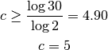
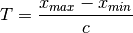
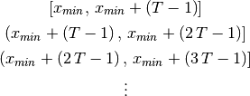
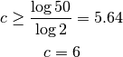
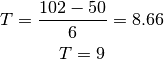

Proyectos para el primer corte¶
1. Realizar una tabla de frecuencias¶
La idea de este proyecto es definir una clase o una función que reciba un lista de números y realice una tabla de frecuencias con ellos. Para ello deben realizarse las siguientes operaciones:
a) Calcular el número de intervalos¶
El número de intervalos en que se van a agrupar los datos se calcula con la fórmula:

donde n es el número total de datos y c se redondea al entero más cercano hacia arriba.
- Ej:
Si se tienen 30 datos, el número de intervalos es:

b) Calcular el tamaño de cada intervalo¶
Para ello se utiliza la fórmula:

donde T se redondea normalmente al número de decimales que tengan los datos, es decir, si los datos no tienen decimales, T se redondea a un número entero, si tienen un decimal, se redondea a un decimal, etc.
c) Construir los intervalos¶
Los intervalos a usar en la tabla dependen del número de decimales que tengan los datos, así:
Si los datos no tienen decimales¶
Se usan las fórmulas:

Se construyen tantos intervalos como nos haya dado el valor de c o los que se necesiten para cubrir todos los datos.
Ejemplo¶
Avianca ha recolectado la siguiente información sobre el número de pasajeros que han tomado la ruta Cali-Bogotá en el vuelo de las 8:00 a.m.:
68 71 77 83 79 72 74 57 67 69 50 60 70 66 76 70 84 59 75 94 65 72 85 79 71 83 84 74 82 97 77 73 78 93 95 78 81 79 90 83 80 84 91 101 86 93 92 102 80 69
Realizar una tabla de frecuencias con estos datos.
R/
Calculamos el número de intervalos como:

Calculamos el tamaño de cada intervalo como:

Construimos los intervalos como:
![\begin{eqnarray*}
\left[50,\,50+\left(9-1\right)\right] & = & \left[50,\,58\right]\\
& & \,\,\,\swarrow\,\,\,\downarrow+\, T=9\\
& & \left(58,\,67\right]\\
& & \,\,\,\swarrow\,\,\,\downarrow+9\\
& & \left(57,\,76\right]\\
& & \,\,\,\swarrow\,\,\,\downarrow+9\\
& & \left(76,\,85\right]\\
& & \,\,\,\swarrow\,\,\,\downarrow+9\\
& & \left(85,\,94\right]\\
& & \,\,\,\swarrow\,\,\,\downarrow+9\\
& & \left(94,\,103\right]
\end{eqnarray*}](../../_images/math/d320488a0ac8d68e85952b67f4abd8da6491d201.png)
4. Finalmente, contamos cuantos datos caen en cada uno intervalo para poder construir la tabla:
Intervalos Frecuencia Frecuencia Acumulada Frecuencia Acumulada Relativa [50, 58] 2 4% 4% (58, 67] 5 10% 14% (67, 76] 14 28% 42% (76, 85] 18 36% 78% (85, 94] 7 14% 92% (94, 103] 4 8% 100%
2. Construir la tabla de intereses para el pago de un préstamo al banco¶
La idea de este proyecto es determinar cuál es la forma en que una persona le cancela un préstamo a un banco. Para ello es necesario definir una clase o un conjunto de funciones que determinen cuántas debe pagar una persona para cancelar su préstamo, dado el valor del mismo, el valor de la cuota y los intereses que el banco propone cobrarle.
Por ejemplo, si una persona pide un préstamo de 40 millones, y debe cancelar una cuota fija de 600 mil pesos mensuales a un interés del 10% anual, el programa deberá retornar una tabla como la siguiente:
Cuota Valor Cuota Pago Intereses Abono Capital Saldo 1 600000 333333 266667 39733333 2 600000 331111 268889 39464444 3 600000 328870 271130 39193315 4 600000 326611 273389 38919926 5 600000 324333 275667 38644258 6 600000 322035 277965 38366294 7 600000 319719 280281 38086013 8 600000 317383 282617 37803397 9 600000 315028 284972 37518425 10 600000 312654 287346 37231078 11 600000 310259 289741 36941337 12 600000 307844 292156 36649182 13 600000 305410 294590 36354592 14 600000 302955 297045 36057547 15 600000 300480 299520 35758026 16 600000 297984 302016 35456010 17 600000 295467 304533 35151476 18 600000 292929 307071 34844405 19 600000 290370 309630 34534775 20 600000 287790 312210 34222565
Como puede verse, del valor de la cuota una parte va al pago de intereses y otra parte se abona al capital. Este último valor se resta de los 40 millones de préstamo iniciales para encontrar el saldo que aún le debe la persona al banco.
Es muy importante tener en cuenta que es sobre este nuevo saldo es que se calculan los intereses y el abono a capital para el siguiente mes. Así que, aún si la persona cancela la misma cuota durante el tiempo que dure el préstamo, la cantidad de dinero que uno paga en intereses y en capital va variando según el saldo, pues mientras los primeros van disminuyendo los segundos van aumentando.
3. Identificar el lenguaje de un texto¶
En organizaciones que deben manejar gran cantidad de documentos en distintos idiomas (por ejemplo la ONU), es común el uso de programas que permitan identificar el lenguaje en que está escrito un documento (inglés, español, alemán), sin la intervención de un ser humano.
Hay varias técnicas para hacerlo, pero una de las más sencillas consiste en contar cuántas veces se repiten varias palabras clave en el texto, como artículos, conjunciones y preposiciones. Lo que ocurre es que cada lenguaje tiene unas palabras que se repiten más que otras, por lo que al contar su frecuencia es posible determinar el origen de un texto.
A continuación podemos ver cuáles son las palabras más usadas en distintos lenguajes:
Inglés Francés Alemán Italiano Portugués Español the de der di de de and la die e a la to le und il que que of et den che o el a des in la e en in les von a do y was du . in da a his “ zu per no los that en dem del um del I un , un em se he que fr non para por as a mit i com las had qui das si se con with dans des le os un it ist para
El proyecto consiste en leer y analizar las archivos que aparecen a continuación e identificar correctamente el lenguaje en que están escritos, de acuerdo a esta técnica.